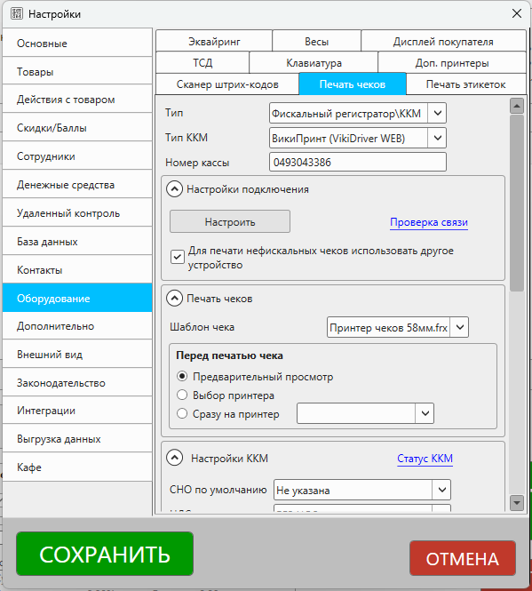
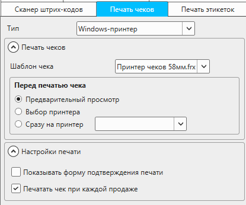
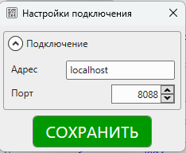
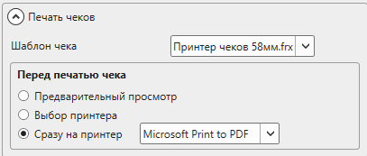
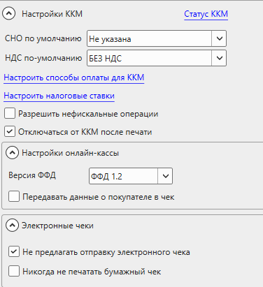

Описание раздела настроек "Оборудование – Печать чеков". Открыть настройки можно из меню главного окна программы: Файл – Настройки.

Важно
Доступность некоторых опций зависит от типа выбранного устройства и типа подключения.
Типы устройств
Тип
Тип подключаемого устройства
Доступны варианты:
- Нет – печать чеков не используется
- Windows принтер – используется нефискальный принтер чеков (или обычный принтер), работающий как системный Windows принтер
- Фискальный регистратор/ККМ – касса (в т.ч. онлайн-касса, программный фискальный модуль) для регистрации и печати фискальных чеков.
Тип ККМ
Тип (марка) подключаемой ККМ (кассы, онлайн-кассы, фискального регистратора).
Полезные материалы
Доступны варианты:
- АТОЛ (драйвер v.8.*) – данный драйвер не поддерживается производителем. Рекомендуется использовать 10-ю версию!
- АТОЛ (драйвер v.10*) – кассы производства АТОЛ через драйвер v.10 Инструкция по подключению
- АТОЛ (веб-сервер) – кассы производства АТОЛ для работы через веб-сервер Инструкция по подключению
- Штрих-М – кассы производства Штрих-М (через драйвер v.4 и v.5) Инструкция по подключению
- Viki-pirnt (Дримкас) – кассы производства Дримкас через pirit_lib.dll Инструкция по подключению
- ВикиПринт (VikiDriver) - кассы производства Дримкас через VikiDriver Инструкцию по подключению
- ККМ-Сервер (kkmserver.ru) – сервер, для работы с кассами с нескольких устройств. Подробнее о ККМ-Сервере.
- Меркурий (служба INECRMAN) – кассы производства Инкотекс, работающие по http-протоколу.
- Нева-03-Ф - касса Нева-03-Ф
Устаревший драйвер
АТОЛ (драйвер v.8.*) – данный драйвер не поддерживается производителем. Рекомендуется использовать 10-ю версию!
Внешний вид настроек
Внешний вид настроек зависит от выбранного типа устройства и модели фискального регистратора

Внешний вид настроек для Windows-принтера

Внешний вид настроек для фискальных регистраторов
Настройки подключения
Раздел для настройки подключения к устройству.
Отображается для фискальных регистраторов.

Настроить
Раздел для настройки подключения к устройству.
В зависимости от типа ККМ могут отображаться разные настройки: подключение через COM-порт, подключение по IP/TCP или окно настроек драйвера.

Пример окна настроек подключения к кассе ВикиПринт через VikiDriver
Проверка связи
Проверка связи с ККМ. Будет напечатан нефискальный чек, если удалось подключиться к ККМ.
Для печати нефискальных чеков использовать другое устройство
Возможность печатать нефискальные чеки на Windows-принтере.
Печать чеков
Раздел для настройки печати чеков.
Настройки доступны для Windows-принтеров и при активной опции "Для печати нефискальных чеков использовать другое устройство" для фискальных регистраторов.

Шаблон чека
Шаблон, по которому будет формироваться чек перед печатью.
Перед печатью чека
Выбор поведения программы перед печатью чека. Доступны варианты:
Варианты поведения:
- Предварительный просмотр – будет показано окно предварительного просмотра печатаемого чека
- Выбор принтера – будет предложен выбор принтера, на котором печать чек. Без предварительного просмотра
- Сразу на принтер – отправка документа сразу на печать без предварительного просмотра и выбора принтера. Необходимо указать принтер, на котором будут печататься чеки.
Настройки ККМ
Раздел для настройки работы ККМ.
Настройки доступны для фискальных регистраторов.

Статус ККМ
Отображает окно для проверки статуса подключенной ККМ с информацией о:
- статусе чека
- статусе смены
- номер ККМ
- версия прошивки
- и т.п.
Отображаемые данные зависят от модели и типа ККМ.
СНО по умолчанию
Система налогообложения, которая будет применена к категориям товаров, у которых СНО не указана.
НДС по умолчанию
Налоговая ставка, которая будет применяться к категориям, у которых НДС выбрана "По умолчанию"
Настроить способы оплаты для ККМ
Раздел для настройки сопоставления индексов способов оплаты в ККМ и способов оплаты в программе.
В статье перечислены значения индексов, которые могут использоваться по умолчанию в некоторых ККМ.
Настроить налоговые ставки
Раздел для настройки сопоставления индексов налоговых ставок в ККМ и значений НДС в программе.
Полезные материалы
Разрешить нефискальные опреации
Если опция включена, то при выполнении снятий и внесений можно включить флаг "нефискальная операция". Тогда при сохранении действия программа не будет передавать информация в кассу.
Если данная опция включена и включена опция "Показывать форму подтверждения печати", то будет доступна печать нефискальных чеков на ККМ.
Если опция выключена, то все операции будут фискальными.
Отключаться от ККМ после печати
Если опция включена, то программа будет "уничтожать" объект драйвера ККМ. Таким образом будет освобожден порт, через который подключена касса, а соединение с кассой будет разорвано. Включение этой опции может быть полезно в тех случаях, когда одну и ту же кассу использует несколько разных программ, установленных на одном кассовом компьютере.
Если опция отключена, то GBS.Market будет держать в памяти объект драйвера, тем самым сохраняя подключение кассы.
Важно
Обратите внимание, что включение опции может привести к тому, что касса не сможет отправлять документы в ОФД. Если с отправкой чеков в ОФД наблюдается проблема - необходимо выключить опцию.
Настройки онлайн-кассы
Раздел для настройки работы онлайн-касс.
Настройки доступны для фискальных регистраторов, используемых в России.
Версия ФФД
Версия формата фискальных документов, который поддерживает касса.
Доступны варианты:
- Оффлайн-касса – используется для касс, работающих по старому порядку.
- ФФД 1.0
- ФФД 1.05
- ФФД 1.1
- ФФД 1.2 – подробнее о данной версии в статье.
Передавать данные о покупателе в чек
Если опция включена, то программа передаст в чек информацию о покупателе: ИНН и ФИО. Информация будет передана если заполнено поле ИНН у покупателя.
Если опция отключена, то в чек информация о покупателе не передается.
Электронные чеки
Не предлагать отправку электронного чека
Если опция включена, то при продаже программа не будет предлагать отправку электронного чека согласно 54-ФЗ.
Если опция включена и при продаже выбран контакт (покупатель), то программа предложит отправку электронного чека по смс или email.
Полезные материалы
Важно
Отправка электронных чеков осуществляется ОФД. Программа НЕ отправляет чеки сама. Необходимо убедиться, что в ОФД подключена соответствующая услуга.
Никогда не печатать бумажный чек
Если опция включена, то GBS.Market при формировании чека на кассе отправит команду в кассу с "просьбой" не печатать бумажный чек. Важно понимать, что касса может игнорировать такую команду и печатать чек, независимо от этой опции.
Настройки печати
Раздел для настройки печати. Набор опций зависит от выбранного устройства.

Печатать комментарий к товару в чеке
Если опция включена, то на чеке, печатаемом фискальным регистратором, после названия товара будет напечатан комментарий, указанный к данному товару.
Показывать форму подтверждения печати
Если опция включена, то после выбора способов оплаты программа предложит выбрать действия:
- Печатать фискальный чека
- Печатать нефискальный чек
- Печатать документ
- Продолжить без чека
- Отмена
Набор доступных действий зависит от установленных настроек.
Например, если запрещена продажа без чека, то действие "продолжить без чека" не будет доступно.
Отправлять команду на отрезку документов
Если опция включена, то программа после печати чеков и отчетов будет отправлять команду на отрезку бумаги на фискальном регистраторе.
Рекомендуется использовать, если ККМ автоматически не отрезает чеки после печати.
Печатать чек при каждой продаже
Если опция включена, то на главной форме опция "печатать чек" будет всегда включена.
Опция недоступна, если включена опция "Показывать форму подтверждения печати".
Разрешить продажи без чека
Если опция включена, программа позволит сохранять продажи без печати чеков, при использовании фискального регистратора в качестве устройства для печати чеков.
Показывать уведомление при отправке данных в ККМ
Если опция включена, то программа будет показывать уведомления, когда в кассу отправляется команда (печать чека, снятие отчета и т.п.).
Ширина кассовой ленты ... символов
Количество символов, которые вмещаются на кассовой ленты.
Опция доступна при печати чеков на ККМ. Значение опции используется только для печати нефискальных чеков.
Другие настройки
Настройки, которые специфичны для некоторых типов ККМ
Показать папку с драйвером
Опция доступна для ККМ VikiPrint
Открывает папку, в которую необходимо скопировать драйвер ККМ.
Модель кассы
Опция доступна для ККМ Меркурий.
Доступно для выбора:
- 119Ф
- Другие (115Ф, 130Ф, 180Ф, 185Ф)
Использовать JSON-API протокола обмена
Опция доступна для ККМ Меркурий.
Если опция включена, то используется новый протокол обмена с кассой.
Номер кассы
Опция доступна для VikiDriver
Заводской номер кассы